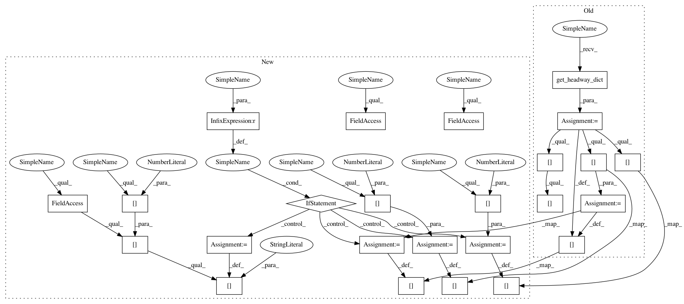

7b2ff2d8345738ca4a9857863f375049a335ee02,cistar-dev/cistar/core/base_env.py,SumoEnvironment,setup_initial_state,#SumoEnvironment#,205
Before Change
self.sorted_ids = self.sort_by_position()
// collect headway, leader id, and follower id data
vehicles = self.get_headway_dict()
for veh_id in self.ids:
self.vehicles[veh_id]["headway"] = vehicles[veh_id]["headway"]
self.vehicles[veh_id]["leader"] = vehicles[veh_id]["leader"]
self.vehicles[veh_id]["follower"] = vehicles[veh_id]["follower"]
// dictionary of initial observations used while resetting vehicles after each rollout
self.initial_observations = deepcopy(dict(self.vehicles))
After Change
// self.vehicles[veh_id]["follower"] = vehicles[veh_id]["follower"]
headway = self.traci_connection.vehicle.getLeader(veh_id, 200)
if headway is None:
self.vehicles[veh_id]["leader"] = ""
self.vehicles[veh_id]["follower"] = ""
self.vehicles[veh_id]["headway"] = self.scenario.length - self.vehicles[veh_id]["length"]
else:
self.vehicles[veh_id]["headway"] = headway[1]
self.vehicles[veh_id]["leader"] = headway[0]
self.vehicles[headway[0]]["follower"] = veh_id
// dictionary of initial observations used while resetting vehicles after each rollout
self.initial_observations = deepcopy(dict(self.vehicles))
// contains the last lc before the current step
self.prev_last_lc = dict()
In pattern: SUPERPATTERN
Frequency: 3
Non-data size: 25
Instances
Project Name: flow-project/flow
Commit Name: 7b2ff2d8345738ca4a9857863f375049a335ee02
Time: 2017-07-11
Author: eugenevinitsky@airbears2-10-142-36-33.airbears2.1918.berkeley.edu
File Name: cistar-dev/cistar/core/base_env.py
Class Name: SumoEnvironment
Method Name: setup_initial_state
Project Name: flow-project/flow
Commit Name: 7b2ff2d8345738ca4a9857863f375049a335ee02
Time: 2017-07-11
Author: eugenevinitsky@airbears2-10-142-36-33.airbears2.1918.berkeley.edu
File Name: cistar-dev/cistar/core/base_env.py
Class Name: SumoEnvironment
Method Name: setup_initial_state
Project Name: flow-project/flow
Commit Name: 349297d55712cdc952cc9d1dfc8444ed65cf0d4f
Time: 2017-07-27
Author: akreidieh@gmail.com
File Name: cistar-dev/cistar/core/base_env.py
Class Name: SumoEnvironment
Method Name: step
Project Name: flow-project/flow
Commit Name: 7b2ff2d8345738ca4a9857863f375049a335ee02
Time: 2017-07-11
Author: eugenevinitsky@airbears2-10-142-36-33.airbears2.1918.berkeley.edu
File Name: cistar-dev/cistar/core/base_env.py
Class Name: SumoEnvironment
Method Name: reset